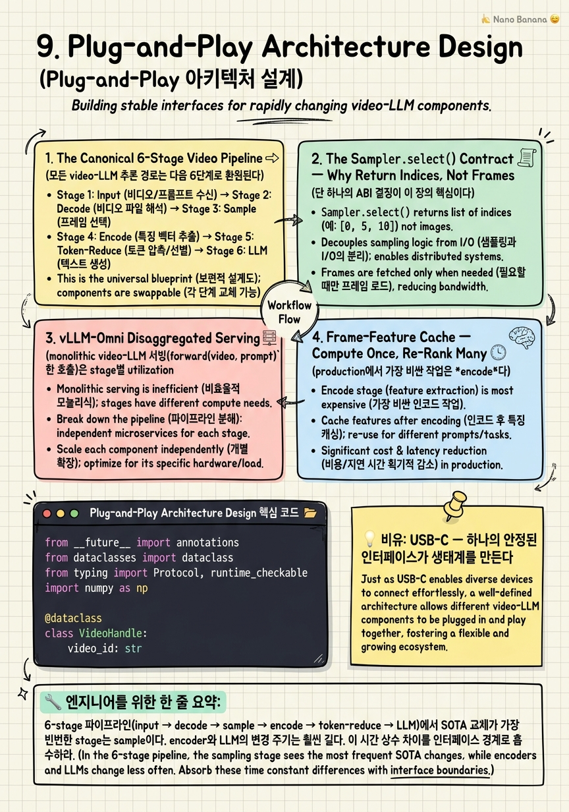

Plug-and-Play Architecture Design

🎯 학습 목표
- 비디오 파이프라인을 6단계 stage로 분해하고 각 stage의 책임 경계를 정의할 수 있다
- `Sampler.select(frames, query, budget, scenes) -> List[int]` 계약이 왜 ABI 관점에서 옳은지 설명할 수 있다
- vLLM-Omni 스타일 disaggregated graph를 설계하고 per-stage batching 이득을 추정할 수 있다
- frame-feature cache의 key 설계와 invalidation 전략(`video_id:fps:model`)을 구현할 수 있다
- 6가지 anti-pattern을 production 코드에서 식별하고 리팩터링할 수 있다
- encoder/LLM을 재학습하지 않고 sampler를 A/B 롤아웃하는 feature-flag 패턴을 설계할 수 있다
8장까지 우리는 '어떤 sampler가 더 정확한가'를 다뤘다. 9장은 질문을 뒤집는다 — '*어떤 sampler든* 갈아끼울 수 있는 시스템을 어떻게 설계하는가'. SOTA는 6개월 주기로 바뀐다(AKS → BOLT → AdaRD-Key → FOCUS). encoder(CLIP/SigLIP)와 LLM(Qwen3-VL/LLaVA-Video)은 그보다 훨씬 느리게 바뀐다. 잘 설계된 파이프라인은 이 *시간 상수의 차이*를 인터페이스 경계로 흡수한다. 핵심은 단 하나의 계약이다 — sampler는 *프레임이 아니라 인덱스를 반환한다*. 이 한 줄짜리 ABI 결정이 disaggregated serving, frame-feature cache, feature-flag rollout, 그리고 6장에서 본 long-video 처리까지 전부 가능하게 만든다. 이 장은 vLLM-Omni(2025-11 reported 91.4% JCT 감소)와 Twelve Labs Embed API를 참조 구현으로 삼아, plug-and-play 아키텍처의 *불변 부분*과 *swappable 부분*을 분리하는 법을 다룬다.
핵심 내용
1. The Canonical 6-Stage Video Pipeline
모든 video-LLM 추론 경로는 다음 6단계로 환원된다.
`
(1) Input : URL / blob / 업로드된 파일 → bytes
(2) Decode : Decord / PyAV / NVDEC → ndarray[T, H, W, 3]
(3) Sample : T 프레임 중 N개 인덱스 선택 ← SWAP POINT
(4) Encode : CLIP / SigLIP / Marengo → Tensor[N, D_v]
(5) Token-Reduce : SlowFast / HiCo / TokenMerge → Tensor[N', D_v]
(6) LLM : vLLM / TensorRT-LLM → text
`
각 stage가 plug-and-play가 되려면 *interface가 stage 사이 경계에서만* 정의되어야 한다. 즉 (2)→(3) 경계는 'T 프레임의 numpy array와 (옵션) 메타데이터'로, (3)→(4) 경계는 'List[int] 인덱스'로 못박혀 있어야 한다. 다음 표는 각 경계의 *불변 contract*다.
| 경계 | 입력 타입 | 출력 타입 | 불변 메타 |
|---|---|---|---|
| Input → Decode | bytes or Path | VideoHandle(reader, fps, T, hw) | video_id, sha256 |
| Decode → Sample | VideoHandle | List[int] (frame indices) | query, budget, scenes? |
| Sample → Encode | List[int] + VideoHandle | Tensor[N, D_v] | model_id, preprocess_id |
| Encode → Reduce | Tensor[N, D_v] | Tensor[N', D_v] | reduction_ratio |
| Reduce → LLM | Tensor[N', D_v] | str (생성 결과) | prompt, tokenizer_id |
실수 패턴: 많은 초기 코드베이스가 stage (3)와 (4)를 한 함수에 묶어 sample_and_encode()로 노출한다. 이러면 sampler를 바꿀 때마다 encoder caller도 손대야 한다. *boundary가 코드 경계*가 아니라 *함수 시그니처 경계*여야 plug-and-play가 가능하다.
실제 production stack 매핑: - Decode: Decord는 numpy zero-copy로 빠르지만 H.265 일부 코덱에서 PyAV로 fallback. NVIDIA stack에서는 NVDEC + DALI.
- Encode: open-weights는 SigLIP-SO400M / CLIP-ViT-L/14, managed는 Twelve Labs Marengo 3.0 multi-vector.
- Token-Reduce: VideoChat-Flash HiCo (1/50 비율), NVILA scale-then-compress, FastVID dynamic density.
- LLM: vLLM 0.x continuous batching, paged KV cache.
2. The Sampler.select() Contract — Why Return Indices, Not Frames
단 하나의 ABI 결정이 이 장의 핵심이다.
`python
def select(
video: VideoHandle, # 디코드 핸들 (lazy, frame 자체는 미반환)
query: str | None, # query-aware sampler용; uniform은 무시
budget: int, # 반환할 프레임 수 (LLM context로 결정됨)
scenes: list[Scene] | None, # shot 경계 (PySceneDetect, 옵션)
) -> list[int]:
...
`
왜 `List[int]`인가? 네 가지 이유.
1) 메모리 비용. 1시간 1080p @ 30fps = 108,000 프레임 × 6.2MB = 약 670GB raw. List[PIL.Image]를 반환하면 sampler가 RAM에 전부 적재해야 한다. 인덱스는 432KB. encoder는 자기가 필요한 시점에 lazy하게 가져간다.
2) caching의 자연스러운 key. (video_id, indices, encoder_id)가 frame-feature cache의 자연스러운 hash key가 된다. 만약 frames를 반환했다면 byte-equality로 key를 잡아야 하고, JPEG re-encode가 한 번만 끼어도 cache miss.
3) disaggregated serving 호환. vLLM-Omni처럼 sampler와 encoder가 다른 GPU pool에 있으면 frames를 RPC 경계로 보내는 비용은 indices의 ~10⁴배. indices는 gRPC payload가 KB 단위.
4) debuggability와 재현성. 평가 시 'sampler X가 어떤 프레임을 골랐나'를 log에 남겨야 하는데, indices는 그대로 JSON-serializable. 8장에서 본 commercial gap 분석도 'index trace'가 있어야 가능하다.
`query`를 `str | None`으로 두는 이유: uniform, fps-based, shot-based sampler는 query를 무시한다. AKS·BOLT·Frame-Voyager는 사용한다. Optional로 두면 caller가 *어떤 sampler가 underneath든 상관없이* 같은 코드로 호출 가능 — Liskov substitution이 plug-and-play의 본질이다.
`scenes`를 옵션으로 두는 이유: PySceneDetect는 비싸다(1시간 비디오 약 30-90초). 이미 indexing 단계에서 계산해 둔 scene list가 있다면 sampler가 재사용. AKS·BOLT는 scene anchors를 hint로 쓸 때 정확도가 올라간다. 없으면 sampler 내부에서 fallback.
`budget: int` (token 아님 frame 수): token budget은 encoder + token-reducer 조합에 따라 다르다. sampler가 그걸 알 필요 없다. 'N개 인덱스만 골라라'가 layering violation을 막는다. caller가 budget = llm_ctx_tokens // tokens_per_frame_after_reduction을 계산해서 전달.
3. vLLM-Omni Disaggregated Serving
monolithic video-LLM 서빙(forward(video, prompt) 한 호출)은 stage별 utilization 불균형을 낳는다. 1시간 비디오 처리 시:
- Decode: CPU/NVDEC bound, ~3-8초
- Sample(BOLT): SigLIP score 한 번, ~0.5초
- Encode: GPU SigLIP-SO400M, 64 frames, ~0.2초
- LLM prefill+decode: 64×729 vision tokens + text, ~6-15초
같은 GPU에서 직렬화하면 stage들이 서로의 idle을 메꿔주지 못한다. vLLM-Omni(vllm-project/vllm-omni)는 2025년 11월 블로그(blog.vllm.ai/2025/11/30)에서 발표된 disaggregated graph로 이를 해결한다. encoder pool, sampler pool, LLM core를 *독립 stage*로 분리하고 각각 per-stage batching한다. 보고된 결과는 동기 baseline 대비 91.4% JCT(job completion time) reduction.
핵심 mechanism 세 가지:
1) Per-stage batching. encoder는 16 frames/batch로 GPU saturation, LLM은 paged KV cache로 8 requests/batch concurrent. stage마다 최적 batch size가 다르다는 사실을 받아들인다.
2) Async handoff via shared object store. stage 사이에 frames/embeddings를 직접 전달하지 않고 in-cluster object store(예: Plasma/Ray, 혹은 자체 KV store)에 던진다. handle만 RPC. 우리의 List[int] contract가 이 구조에서 자연스럽게 맞물린다.
3) Sampler를 graph node로 격리. sampler가 encoder와 같은 pool에 있을 수도 있고(AKS는 SigLIP을 sampling 단계에서 또 호출), LLM 쪽에 있을 수도 있다(GenS는 VideoLLM 자체가 retriever). 그래프 노드로 빼두면 어느 쪽으로 옮겨도 caller 코드 무수정.
우리의 reference graph:
`
[Ingest] ─► [DecodeWorker pool (NVDEC×4)] ─► FrameStore (Redis/S3)
│
┌── [PySceneDetect lazy] ────────┤
├── [Sampler Plugin pool]: AKS|BOLT|Voyager|M-LLM
├── [Encoder pool (SigLIP×8)] ──► EmbedCache
├── [TokenReducer (HiCo)]
└── [LLM serving (vLLM-Omni)]
`
실용 tip: stage 사이 queue depth를 모니터링하면 어느 stage가 bottleneck인지 즉시 드러난다. encoder queue가 자주 0이면 encoder pool을 줄이고 sampler pool을 키워라. lmms-eval로 offline 평가할 때는 직렬화로 충분하지만, production에서는 거의 항상 disaggregated가 이긴다.
4. Frame-Feature Cache — Compute Once, Re-Rank Many
production에서 가장 비싼 작업은 *encode*다. SigLIP-SO400M으로 1시간 비디오 1fps(3600 프레임) 임베딩에 GPU 분 단위. 같은 비디오에 대해 query가 여러 번 들어오면(예: 강의 영상 + 사용자 100명) 매 query마다 re-encode하는 건 비합리적이다.
해결: per-frame embedding을 한 번 계산해 캐시. 그러면 query 시점에는 sampler가 *embedding만 보고* 인덱스를 고른다 — cheap re-rank.
Twelve Labs Embed API가 정확히 이 패턴을 외부 API로 노출한다. video를 한 번 ingest하면 Marengo 3.0의 multi-vector embeddings(joint visual+audio+ASR+motion, ~6초 chunk)가 저장되고, 이후 query는 그 vector space에서 ANN 검색.
자체 구현 시 cache key 설계:
`
key = f"{video_id}:{fps}:{encoder_model_id}"
value = Tensor[T_at_fps, D_v] (per-frame embedding, fp16)
`
세 차원 모두 invalidation 의미를 갖는다:
- video_id: 명백.
- fps: 다른 fps로 디코딩하면 다른 프레임 집합. 1fps와 2fps embedding은 *섞어 쓰면 안 된다*.
- encoder_model_id: SigLIP과 CLIP은 다른 vector space. embedding은 모델 교체 시 모두 무효.
invalidation 전략 세 가지:
1) Content-addressed. sha256(video_bytes)를 video_id로 쓰면 같은 컨텐츠 re-upload는 자동 cache hit. 비용 절감 큼.
2) TTL + encoder version pinning. encoder를 SigLIP-v1 → SigLIP-v2로 올릴 때 *기존 cache는 그대로 두고* 새 key namespace 시작. dual-read 기간을 두고 점진 마이그레이션. 한 번에 무효화하면 GPU re-encode 폭주.
3) Sampler는 cache를 *consume only*. sampler가 cache에 쓰면 안 된다. 쓰기는 encoder stage에서만. 이 단방향성이 race condition을 막는다.
경계 case: shot list도 캐시하라. PySceneDetect는 video별 1회 계산. key는 {video_id}:scenes:{detector_version}. AKS와 BOLT가 둘 다 hint로 쓸 수 있다.
얼마나 절약되나? Twelve Labs의 가격 모델(~$0.07/1M input tokens on Bedrock)이 amortize되는 이유는 indexing이 1회, query가 N회이기 때문. 자체 구현 시에도 query 100회 가정하면 encoder GPU 비용을 두 자릿수 배수로 줄인다. 이게 8장에서 본 'production이 retrieval 시스템에서만 SOTA sampler를 쓰는' 이유의 경제적 근거다.
5. Six Anti-Patterns (그리고 각각 어떻게 망가지는가)
production에서 반복적으로 발견되는 6가지 망가지는 패턴이다. 코드 리뷰 체크리스트로 써라.
(a) Uniform 8-frame on 1-hour video
증상: budget을 비디오 길이와 분리. 1시간 = 3600초를 8 프레임으로 → 450초당 1 프레임. 사건 단위가 다 사라진다. BOLT(arXiv:2503.21483) baseline에서 정확히 이 setup이 Video-MME long split 53.8 → 56.1 차이의 원인. 수정: budget = clamp(min_b, video_seconds * frames_per_second_target, max_b).
(b) Sampling before shot detection 증상: uniform sample 후 SceneDetect 돌림. 이미 frame을 떨어뜨린 뒤라 shot 경계와 어긋남. 한 shot 안에서 같은 시점 여러 프레임이 뽑히고, 다른 shot은 통째로 누락. 수정: scene detect를 *decode 직후*, sample 위에 둔다. AKS/BOLT는 scene anchors를 hint로 받는다.
(c) Selection inside LLM pooling when scene evidence was discarded upstream 증상: upstream에서 uniform으로 8 프레임만 통과시키고, LLM의 attention pooling이 'token 중요도를 잘 학습할 거야'라고 기대. 이미 버려진 프레임의 정보는 attention이 복구하지 못한다. 'LLM이 알아서 할 것'은 sampling 결정을 *upstream에 둔* 시스템에서 통하는 말이다. 수정: 7장 token compression과 sampling을 *두 개의 독립 축*으로 다룬다.
(d) Fixed token budget independent of video length
증상: 30초든 1시간이든 vision token이 4608개로 고정. 짧은 비디오는 token이 낭비되고, 긴 비디오는 정보가 잘린다. 수정: vision_tokens = f(video_seconds) 함수로. NVILA의 'scale-then-compress'가 이 사고를 내장.
(e) Re-decoding per query instead of caching features 증상: 같은 비디오에 query 100번 들어오면 NVDEC 100번 → SigLIP 100번. cost가 query당 분 단위로 누적. 수정: §4의 frame-feature cache. content-addressed key. Twelve Labs Embed API 패턴.
(f) Sampler coupled to specific MLLM tokenizer
증상: sampler가 qwen_vision_tokenizer.encode(frame)를 직접 호출. Qwen3-VL → LLaVA-Video로 교체 시 sampler 코드 수정 불가피. 가장 흔한 plug-and-play 실패. 수정: §2의 Sampler.select() -> List[int] 계약 엄수. sampler는 *어떤 MLLM이 downstream인지 모른다*. encoder/tokenizer 호출은 stage (4) 이후에서만.
각 anti-pattern은 단독으로도 SOTA의 정확도 이득을 모두 잡아먹는다. (a)+(e)가 같이 발생하면 Gemini 2.5 Pro 같은 *commercial* API에 한 query당 수십 센트씩 줄줄 새는 시스템이 된다. 8장의 commercial gap은 일정 부분 이런 anti-pattern이 외부 API 비용으로 노출되지 않는 데서 비롯된다.
6. Feature-Flagged Sampler Swap in Production
SOTA sampler를 A/B 테스트하는 production 절차다. encoder와 LLM은 *건드리지 않는다*. §2의 contract를 지켰다면 다음이 한 PR 안에 들어간다.
Step 1: registry로 sampler 식별자 노출
`python
SAMPLERS = {
"uniform": UniformSampler(),
"aks": AKSampler(encoder="siglip-so400m"),
"bolt": BoltSampler(encoder="siglip-so400m"),
"frame-voyager":FrameVoyagerSampler(ckpt="..."),
"m-llm": MLLMSampler(scorer="qwen-vl-2b"),
}
`
Step 2: feature-flag를 request-level로 inject
`python
sampler_id = flags.get("video.sampler", user_id=req.user_id, default="uniform")
sampler = SAMPLERS[sampler_id]
indices = sampler.select(video, query=req.query, budget=req.budget, scenes=scenes)
`
LaunchDarkly/Statsig/자체 flag 시스템 어느 쪽이든. 핵심은 *결정 지점이 한 줄*이라는 것.
Step 3: 1% → 5% → 25% → 50% rollout 각 단계에서 본 지표: - 정확도: lmms-eval Video-MME long, MLVU, LongVideoBench (offline 평가는 매일 cron) - 비용: 평균 vision tokens/request, encoder GPU-seconds/request - 지연: p50/p95/p99 e2e latency - 안정성: sampler가 raise하는 비율
Step 4: shadow mode 새 sampler를 production traffic으로 돌리되 *응답은 control(uniform)으로 반환*. 두 결과를 비교 로깅. 정확도 회귀(regression) 없으면 rollout 진행. AKS·BOLT 같은 training-free sampler는 shadow 비용이 sampler GPU만큼만 들기 때문에 shadow가 현실적. learned sampler(Frame-Voyager, M-LLM)는 추가 모델 호스팅이라 비용 측정 필요.
Step 5: rollback contract
flag를 uniform으로 되돌리면 즉시 baseline 복귀. encoder와 LLM은 변경 없음이므로 *0초 rollback*. 이게 우리가 Sampler.select()를 이 모양으로 정의한 진짜 보상이다.
참고 평가 셋업: lmms-eval(video_decode_backend=decord)에서 sampler를 config field로 둘 수 있다. CI에서 sampler 후보별 score를 cron으로 돌리고, dashboard에 시계열로. AKS가 LLaVA-Video-7B에서는 이기지만 Qwen3-VL에서는 회귀할 수 있다. 모델별 평가가 필수.
💡 비유로 이해하기
노트북에 USB-C 포트가 있으면 모니터, 외장 SSD, 도크, 오디오 인터페이스, 충전기, 어떤 기기든 꽂힌다. 노트북 제조사는 *다음에 어떤 주변기기가 나올지 모른다*. 하지만 USB-C가 전압·데이터·alt-mode를 표준으로 못박아 뒀기 때문에 미래의 모니터도 *과거의 노트북*에 꽂힌다.
Sampler.select(video, query, budget, scenes) -> List[int]는 video pipeline의 USB-C다.
- 물리 핀 = 시그니처: 인덱스 list 반환, query는 optional, budget은 frame 수. 이 5개 핀.
- alt-mode = 옵션 메타데이터: scenes를 받으면 쓰고, 안 받으면 자체 fallback. monitor에 DisplayPort alt-mode가 옵션인 것과 같다.
- 케이블 두께 = 호출 비용: indices만 다니므로 RPC 경계로 보내도 KB. USB-C에서 100W power도, 40Gbps Thunderbolt도 같은 모양 케이블로 흐르는 것과 같다.
- chipset 호환성 = encoder/LLM 독립성: 새 sampler(2026 FOCUS)가 나와도 노트북 본체(encoder + LLM)를 바꿀 필요 없다. 그냥 꽂는다.
USB-C 이전 세계를 기억하라 — Mini-USB, Micro-USB, Apple 30-pin, Lightning, 각각 다른 케이블. 그게 sampling 코드의 default 상태다: 매 sampler마다 caller가 자기 어댑터를 짠다. plug-and-play 아키텍처는 *그 어댑터를 한 번 더 들여다보지 않는 것*이 목표다.
💻 코드 예시
typing.Protocol로 Sampler 계약을 정의하고, 세 구현(UniformSampler, AKSampler stub, BoltSampler stub)을 동일 caller가 호출하는 모습이다. 실제 AKS/BOLT 로직은 각 논문 레포(ncTimTang/AKS, sming256/BOLT)에 의존하지만, *interface boundary*는 이 한 파일에 다 담긴다. 이게 §2 contract의 코드 형태다.
from __future__ import annotations
from dataclasses import dataclass
from typing import Protocol, runtime_checkable
import numpy as np
@dataclass
class VideoHandle:
video_id: str
fps: float
num_frames: int
# lazy reader: get_frame(idx) -> np.ndarray[H, W, 3]
get_frame: callable
@dataclass
class Scene:
start: int
end: int # inclusive
@runtime_checkable
class Sampler(Protocol):
"""Plug-and-play contract: returns frame indices, never frames."""
name: str
def select(
self,
video: VideoHandle,
query: str | None,
budget: int,
scenes: list[Scene] | None = None,
) -> list[int]: ...
class UniformSampler:
name = "uniform"
def select(self, video, query, budget, scenes=None):
if budget >= video.num_frames:
return list(range(video.num_frames))
idx = np.linspace(0, video.num_frames - 1, budget, dtype=int)
return idx.tolist()
class AKSampler:
"""Stub of AKS (CVPR 2025, arXiv:2502.21271).
Real impl: SigLIP scoring + relevance/coverage adaptive split."""
name = "aks"
def __init__(self, scorer): self.scorer = scorer
def select(self, video, query, budget, scenes=None):
assert query is not None, "AKS is query-aware"
# 1) score all frames vs query (cached in production)
scores = self.scorer.score(video, query) # shape [T]
# 2) adaptive top-k with coverage constraint over scenes
anchors = [s.start for s in (scenes or [])]
return _adaptive_topk(scores, budget, anchors)
class BoltSampler:
"""Stub of BOLT (CVPR 2025, arXiv:2503.21483).
Real impl: inverse-transform sampling on query-frame alignment."""
name = "bolt"
def __init__(self, scorer): self.scorer = scorer
def select(self, video, query, budget, scenes=None):
assert query is not None
weights = self.scorer.score(video, query)
cdf = np.cumsum(np.clip(weights, 1e-6, None))
cdf /= cdf[-1]
us = (np.arange(budget) + 0.5) / budget
idx = np.searchsorted(cdf, us)
return np.clip(idx, 0, video.num_frames - 1).tolist()
def _adaptive_topk(scores, budget, anchors):
# simplified: take all anchors then top-k by score for remainder
base = sorted(set(anchors))[:budget]
if len(base) >= budget: return base[:budget]
remaining = budget - len(base)
ranked = np.argsort(-scores).tolist()
extra = [i for i in ranked if i not in set(base)][:remaining]
return sorted(base + extra)
# ---- The pipeline calls them interchangeably ----
def run_pipeline(video: VideoHandle, query: str, sampler: Sampler,
encoder, llm, budget: int = 64) -> str:
assert isinstance(sampler, Sampler), "contract violation"
indices = sampler.select(video, query=query, budget=budget)
frames = np.stack([video.get_frame(i) for i in indices])
vision = encoder.encode(frames) # Tensor[N, D_v]
return llm.generate(query, vision_tokens=vision)Sampler는 Protocol이므로 상속 없이 *시그니처만 맞으면* 통과한다 — duck typing이 ABI다. 세 구현 모두 select(...) -> list[int]. run_pipeline은 어느 sampler가 들어와도 동일한 4줄로 처리하고, encoder/LLM은 *sampler를 모른다*. AKS와 BOLT는 query를 강제하지만 caller는 같은 호출. _adaptive_topk는 실제 AKS의 단순화 버전 — anchors(scene 경계)에 먼저 자리를 잡고 점수로 채워넣는다. 실전에서는 SigLIP/CLIP 점수 계산이 frame-feature cache에서 즉시 lookup된다는 점이 §4와 맞물린다. assert isinstance(sampler, Sampler)는 @runtime_checkable 덕분에 동작 — sigshape mismatch가 production에 새지 않게 막는 가벼운 contract 검사다.
🏭 현업에서의 평가
✅ 시니어가 보는 것
- `Sampler.select() -> List[int]`가 frames가 아니라 indices를 반환해야 하는 *네 가지* 이유(메모리, cache key, RPC, 재현성)를 즉답할 수 있는가
- vLLM-Omni 식 disaggregated graph에서 per-stage batching 이득이 *어디서* 오는지(stage별 utilization 불일치)를 설명할 수 있는가
- frame-feature cache key를 `video_id:fps:encoder_model_id`로 잡고, 각 차원의 invalidation 의미를 분리해 설명할 수 있는가
- feature-flagged sampler swap의 1%→5%→25% rollout과 shadow mode 절차를 그릴 수 있는가
- 6 anti-pattern 중 본인 코드베이스에서 즉시 1개 이상을 지목할 수 있는가
- encoder/LLM 교체 시간 상수가 sampler보다 훨씬 길다는 사실을 인터페이스 경계의 *근거*로 활용하는가
⚠️ 레드 플래그
- 'sampler는 그냥 frames 잘라 보내면 되지 않나'라고 답한다 — RPC/cache/메모리 의미론을 모르는 신호
- sampler 안에서 LLM tokenizer를 직접 호출하는 코드를 정상이라고 생각한다 — anti-pattern (f) 직격
- feature flag rollout 없이 'PR merge 후 100% 전환'을 production 표준이라고 본다
- frame-feature cache invalidation을 '한 번에 다 비우면 된다'고 답한다 — encoder upgrade 시 GPU 폭주 위험을 모르는 신호
- monolithic `forward(video, prompt)` 서빙을 disaggregated와 동등하다고 생각한다 — production load 경험 부재
- anti-pattern (c)에 대해 'LLM attention이 알아서 한다'고 답한다 — 정보 손실의 비가역성을 모름
🎤 예상 인터뷰 질문
- Q1. 당신의 sampler는 현재 `List[PIL.Image]`를 반환한다. 이걸 `List[int]`로 바꿔야 하는지, 바꿀 때 backward compatibility는 어떻게 유지할지, 그리고 *바꾸지 않았을 때* 어떤 production 시나리오에서 가장 먼저 터지는지 설명하라. (모범: cache hit ratio 하락 + RPC payload 폭증 + replay 어려움. dual-shim 시기 두고 마이그레이션.)
- Q2. encoder를 SigLIP-v1에서 SigLIP-v2로 올린다. frame-feature cache 수십 TB가 v1 임베딩이다. 어떻게 무효화/마이그레이션할 것인가. dual-read 기간, key namespace 전략, rollback 경로, cost forecast를 답하라. (모범: 새 key namespace로 v2를 점진 채우고 dual-read; 일정 hit rate 달성 후 v1 evict; 절대 *flush-all* 금지 — GPU 폭주.)
- Q3. AKS를 LLaVA-Video-7B 트래픽의 10%로 쏘려고 한다. shadow mode로 시작해 50%까지 가는 절차를 그려라. 어떤 metric을 dashboard에 두고, 어떤 신호에서 rollback할 것인가. AKS가 Qwen3-VL에서는 정확도 회귀가 나는데 LLaVA-Video에서는 이기는 이유 가설은 무엇인가. (모범: lmms-eval Video-MME long + MLVU CI cron, vision tokens/req, encoder GPU-s/req, p95 latency, raise 비율; 모델별 token tokenizer가 다르고 학습 분포가 달라 sampler 선호가 모델 의존적.)
✨ 핵심 요약
Sampler가 swap point다
6-stage 파이프라인(input → decode → sample → encode → token-reduce → LLM)에서 SOTA 교체가 가장 빈번한 stage는 sample이다. encoder와 LLM의 변경 주기는 훨씬 길다. 이 시간 상수 차이를 인터페이스 경계로 흡수하라.
`select() -> List[int]`가 USB-C다
프레임이 아니라 인덱스를 반환하는 ABI 하나가 메모리, cache key, RPC payload, 재현성 네 가지를 동시에 푼다. 이 한 줄 결정이 plug-and-play 아키텍처의 *유일한* 불변량이다.
Disaggregated serving은 monolithic을 거의 항상 이긴다
vLLM-Omni 보고 91.4% JCT 감소는 per-stage batching과 비동기 handoff가 stage별 utilization 불일치를 흡수하기 때문이다. 우리의 `List[int]` contract가 이 구조에 자연스럽게 들어맞는다.
Frame-feature cache는 비용 모델을 뒤집는다
key는 `video_id:fps:encoder_model_id`. encoding을 1회로 amortize하면 query당 sampler 비용은 cheap re-rank로 떨어진다. Twelve Labs Embed API가 이 패턴을 외부 API로 노출한다. encoder upgrade는 *flush가 아니라* dual-read 마이그레이션.
6 anti-pattern 중 (a)+(e)는 비용을 (c)+(f)는 정확도와 민첩성을 잡아먹는다
Uniform 8 on 1-hour, sample-before-shot, LLM pooling에 미루기, 길이 무관 고정 budget, query마다 re-decode, sampler가 tokenizer를 직접 호출 — 한 anti-pattern이 SOTA 이득을 모두 무효화한다. 코드 리뷰 체크리스트로 만들라.
Feature-flag rollout은 sampler 교체의 표준 절차다
shadow → 1% → 5% → 25% → 50% → 100%. encoder/LLM은 미동. rollback은 flag 한 줄. AKS가 LLaVA-Video에서 이긴다고 Qwen3-VL에서도 이긴다는 보장은 없으니 *모델별* lmms-eval CI가 필수.
ABI는 한 번만 정한다
Mini-USB·Lightning·30-pin을 거친 USB-C의 교훈은 *확정된 인터페이스가 생태계를 만든다*는 것이다. `Sampler.select(video, query, budget, scenes) -> List[int]`를 팀의 RFC로 못박고, 2027년 새 SOTA가 와도 같은 시그니처로 들어오게 하라.